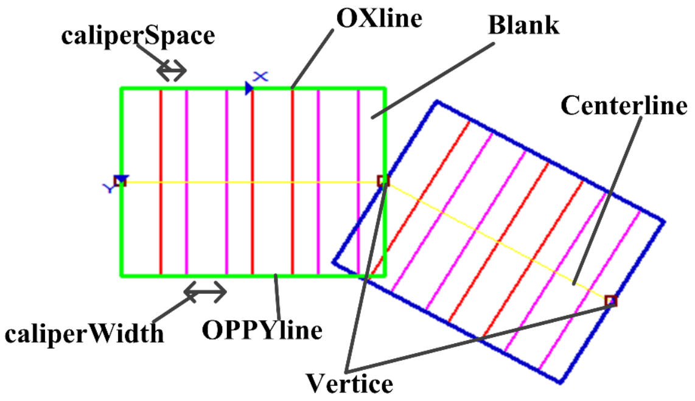

表示折线，对应的Gui图形控件为scGuiTrendline，例如边宽检测工具的折线边宽区域（对应属性栏中边宽检测类型为折线）、珠体跟踪工具的折线珠体训练区域，该折线中有两个可变矩形，即有两个分段。

| 分类 | 接口名称 | 接口描述 |
|---|---|---|
| 构造 | scTrendlineCaliper | scTrendlineCaliper()默认构造函数。 |
| 函数 | GetSubRectNum | 获取折线中可变矩形数目（折线分段数目）。 |
| GetFirstSubRectEx | 获取折线中第一个可变矩形 | |
| GetSubRectEx | 获取指定序号的可变矩形。 | |
| GetCaliperNum | 获取所有的卡尺数目。 | |
| GetCalipers | 获取所有的卡尺。 | |
| BoundingBox | 获取折线的最小外接矩形。 |
功能：构造scTrendlineCaliper对象。
参数：无。
返回值：无。
功能：获取折线中可变矩形数目（折线分段数目）。
参数：无。
返回值：折线中可变矩形个数，整型。
功能：获取折线中第一个可变矩形。
参数：无。
返回值：折线中第一个可变矩形，scRectEx类型。
功能：获取折线中指定序号的可变矩形。
参数：
返回值：第rectExID个可变矩形，scRectEx类型。
功能：获取所有的卡尺数目。
参数：无。
返回值：所有的卡尺数目，整型。
功能：获取所有的卡尺。
参数：无。
返回值：所有卡尺组成的向量，scRectEx类型的向量，相当于Python中的list。
功能：获取折线的最小外接矩形。
参数：无。
返回值：最小外接矩形，scRect类型。
无
无